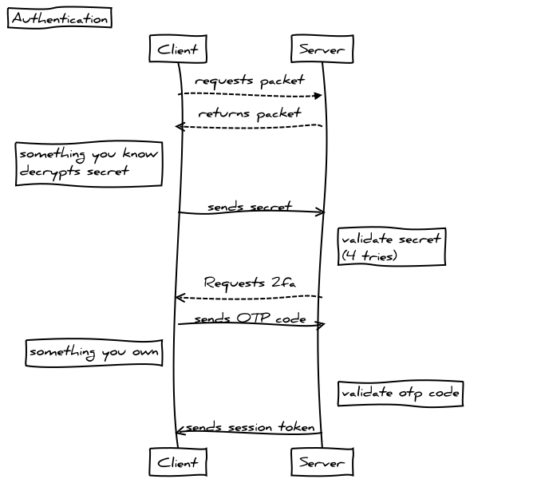
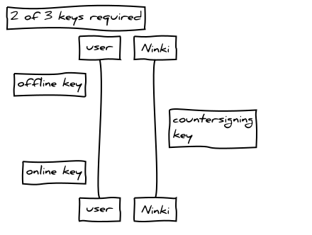
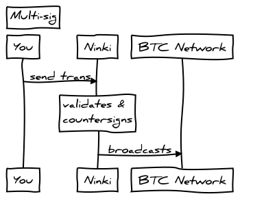

The following describes the process of the server authenticating the user and issuance of a session token.

When the user creates an account a secret is shared between the server and the client. The client encrypts a randomly generated secret using their password as an input to a pbkdf along with a unique salt. The encryption scheme is AES 256 Mode: CBC, Padding: No Padding
The encrypted secret is stored on the server. When the user attempts to login to the server the entered password is derived to a passphrase using a unique salt. The client requests the encrypted secret from the server, the server returns the encrypted secret and the client decrypts using the passphrase. The result is sent back to the server and the server compares the secret with value originally shared.
The user has 4 attempts to succesfully decrypt the secret before the account is locked. Once the user has proven that they can decrypt the secret, and therefore know the password, the server challenges them to provide a one time 2 factor authentication code. If this is validated succesfully the user is authenticated and a session token is issued.
The encrypted packet containing the users api key and public key information is sent to the client and decrypted using the passphrase. The client maintains a connection with the server polling every 10 seconds, if there is no communication for over 60 seconds, the session is timed out and the user will have to authenticate to establish a session.
Bitcoin addresses are difficult to exchange and require either copying and pasting or qr code scanning. This promotes address re-use which in turn can make funds vunerable to R value attacks and are detrimental to financial privacy.
The PGP scheme described here removes the need for exchanging bitcoin addresses everytime two users transact, and promotes zero address re-use. After the PGP validation is complete it becomes less effort to generate new addreses on behalf of each other then it does to find the previous address used for that user and copy/paste it into a transaction.
The server can facilitate the initial exchange, but should not be trusted, and so an out of band validation is required. Note: this should also happen over a secure channel, however this is up to the user as we have, by definition no control over the choice of channel.
Finally, the addresses are generated by the client and not handed off from the server, removing the threat of the server handing off bad addresses. The server acts purely as a verification service, a cross check between what the client has generated and what the server expected.
This provides an extra layer of security against malware on the client replacing the address before the transaction is signed and sent to our server.
The wallet supports exchanging HD public ec key nodes with other users on the service. The purpose of this is to allow users who regularly transact with each other, to generate addresses on each other's behalf. So instead of you sending me an address, I simply derive one from the next node on the public key chain you assinged and sent to me.
This presents a problem of a MIM attack when exchanging nodes. How do we know the server which is facilitating the exchange is not compromised?
To solve this we use PGP with the keys generated on the client at the time of account creation and stored in an encrypted packet, using the user's passphrase.
An out-of-band fingerprint exchange must occur between the two users in order to validate that the service or another actor has not compromised the integrity of the key exchange. We present this fingerprint in the form of a BIP39 encoded mnemonic reffered to as a 'Ninki Phrase'.
Wrap inline snippets of code with <code>.
<section> should be wrapped as inline.
For example, <code><section></code> should be wrapped as inline.Use the <kbd> to indicate input that is typically entered via keyboard.
To switch directories, type <kbd>cd</kbd> followed by the name of the directory.<br>
To edit settings, press <kbd><kbd>ctrl</kbd> + <kbd>,</kbd></kbd>Use <pre> for multiple lines of code. Be sure to escape any angle brackets in the code for proper rendering.
<p>Sample text here...</p>
<pre><p>Sample text here...</p></pre>You may optionally add the .pre-scrollable class, which will set a max-height of 350px and provide a y-axis scrollbar.
For indicating variables use the <var> tag.
y = mx + b
<var>y</var> = <var>m</var><var>x</var> + <var>b</var>For indicating blocks sample output from a program use the <samp> tag.
This text is meant to be treated as sample output from a computer program.
<samp>This text is meant to be treated as sample output from a computer program.</samp>Whenever Bob needs to generate an address for Alice, he retrieves the packet from the server, decrypts it with his PGP private key and derives a new address for Alice. The reverse process happens and Alice and Bob now have connected wallets.
Ninki Wallet is a 2 of 3 multi-signature wallet where 2 keys are controlled by the user and one key is controlled by Ninki. The user would typically store one encrypted key online, on a usb drive or a cloud storage service. This is referred to as the Online key and should always be stored using encryption. The other user key would typically be stored offline, perhaps in paper format in a safe deposit box or safe. The Countersigning key is secured by Ninki on the server.
This configuration allows Ninki to act as a counter-signing service, but without the ability to move the funds alone, and provides the user with the ability to recover their funds in any event.
When the user initiates a transaction, it is built locally on the client, signed with their online key and then sent to the server for counter signing. The server validates the transaction and then countersigns and broadcasts it to the Bitcoin network.
